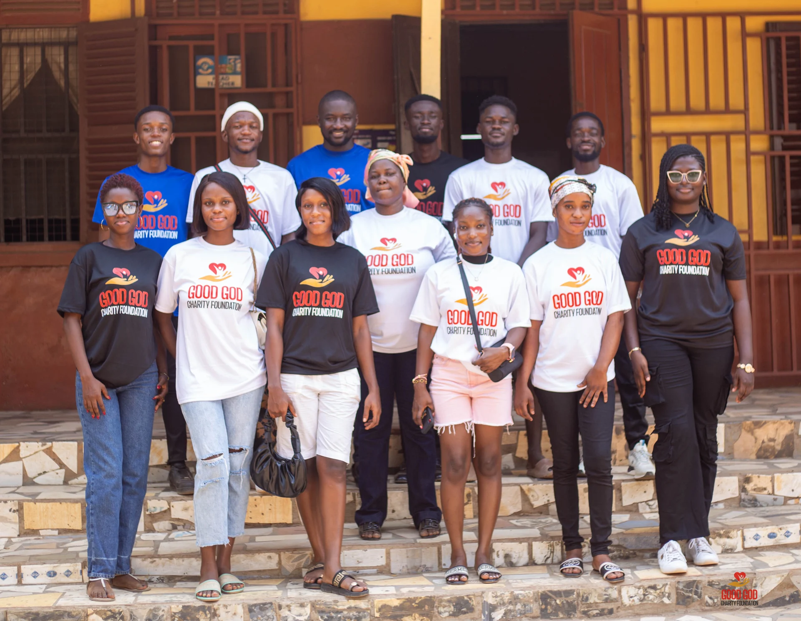
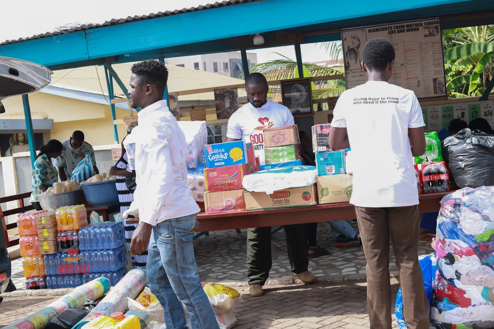
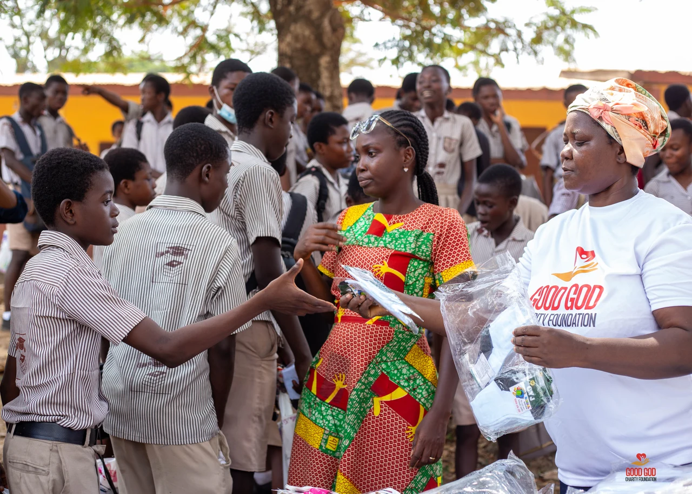
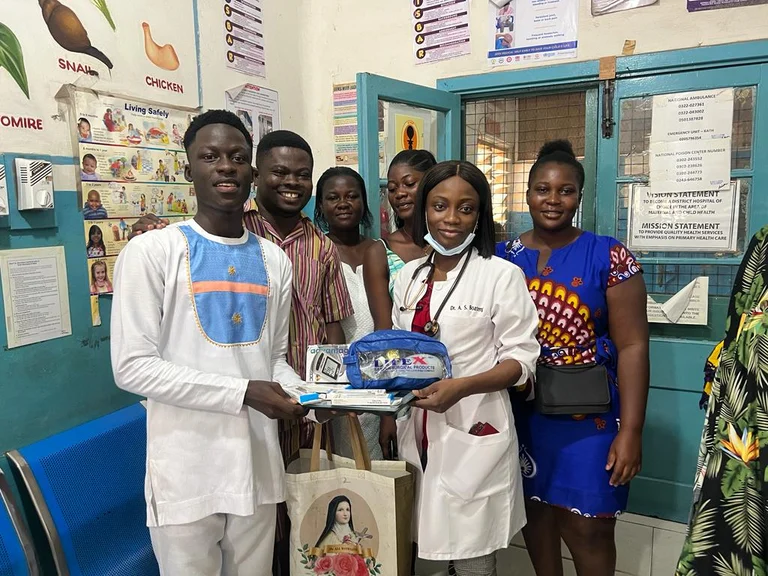
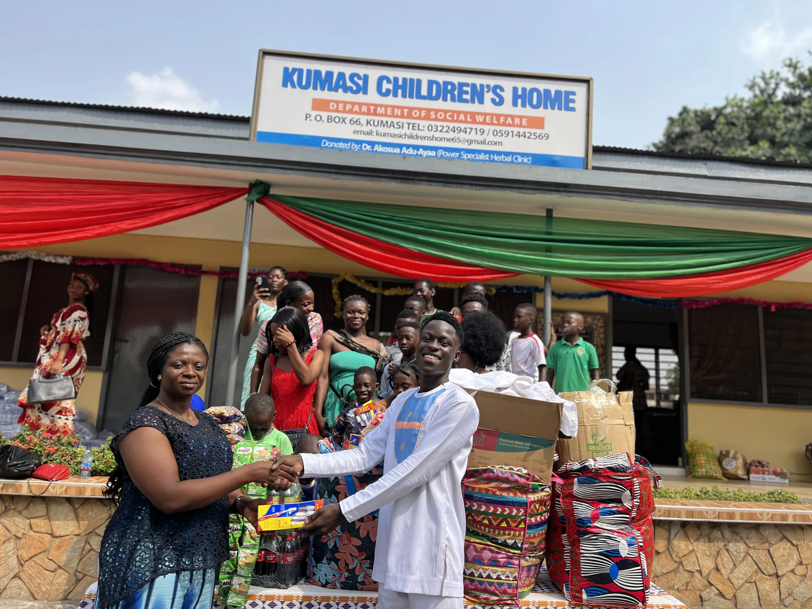
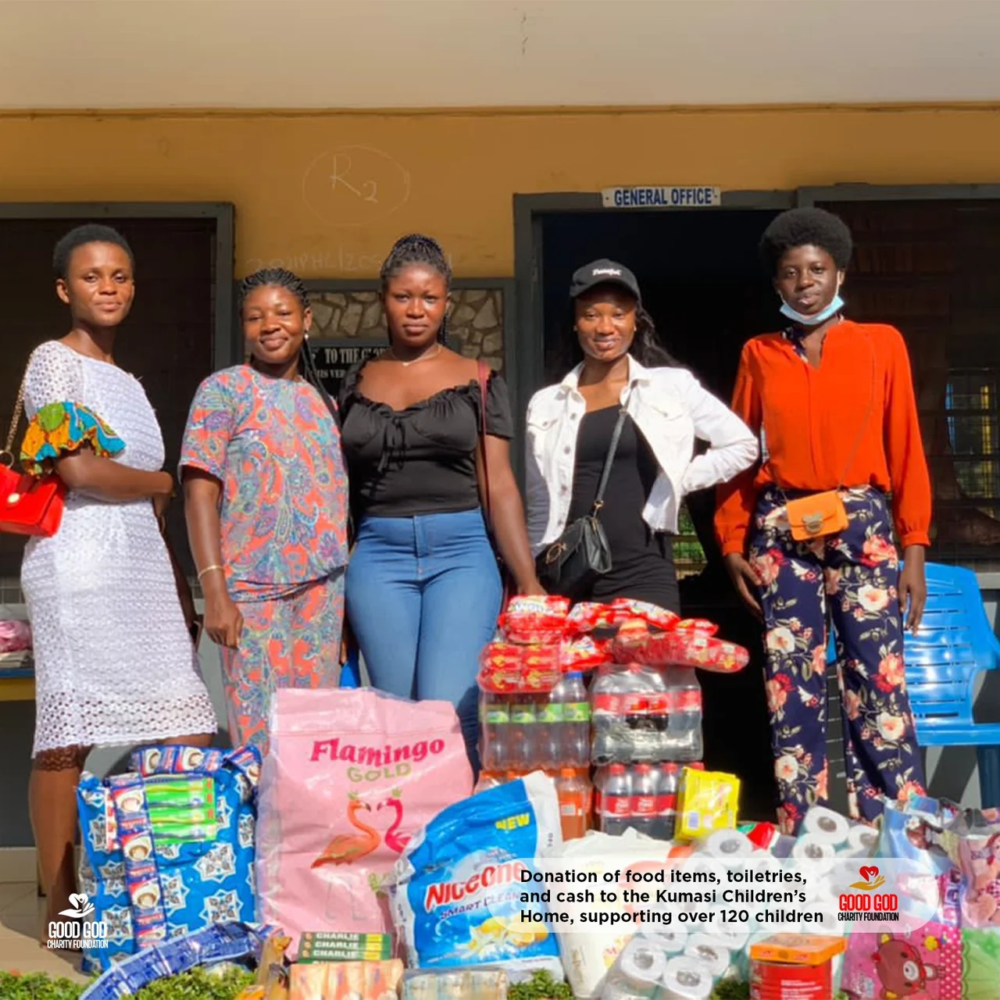

Who We Are
Who We Are
About Us
Good God Charity Foundation
Founded by Theophilus Mensah in 2022, the Good God Charity Foundation is a dedicated and compassionate non-profit organization based in Kumasi, Ghana. We are committed to supporting child healthcare, education, and bringing hope to vulnerable communities. Our foundation is built on the belief that no act of kindness is ever wasted, and we strive to make a meaningful impact by assisting those in need.

“Every act of kindness plants a seed of hope. At the Good God Charity Foundation, our calling is to deliver help, and love to those who need it most.”
Our Mission
Supporting Child Health and Education
Every child deserves a chance to grow, to learn, and to live a healthy life
01
Our Mission
Our mission is to give hope to those who need it most. We are committed to addressing the needs of children, students, orphanages, schools, and abandoned pregnant women in hospitals. Our foundation aims to improve the lives of children and underrepresented families by providing vital support in healthcare and education.
02
Our Vision
We envision a world where every child has access to the essential resources they need to thrive. Our vision is to bring hope to those in low-income and underrepresented families by providing consistent support that fosters their well-being. Whether it's providing educational materials, healthcare equipment, or basic life necessities, we believe our efforts will create a ripple effect that uplifts entire communities.
03
Who We Serve
The Good God Charity Foundation targets orphanages, schools, and hospitals in need of critical support. We assist abandoned pregnant women who lack the means to care for themselves and their unborn babies, as well as orphans and children in need of clothing, food, and educational materials. Our focus extends to supporting low-income families who require assistance with healthcare, schooling, and daily living.
Global Impact
Children in Need Worldwide
Education Gap
Children worldwide lack access to basic education
Healthcare Access
Children without access to essential healthcare
Orphaned Children
Children living without parental care globally
Food Insecurity
Children facing severe food insecurity
Our Impact
Stories of Hope and Change

2026 · Completed & handed over
Clean water for 120+ school children and the Asonsuaso community
120+ school children and the Asonsuaso community
Read story



